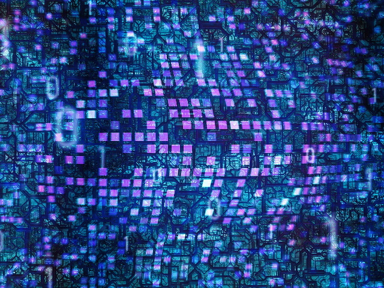
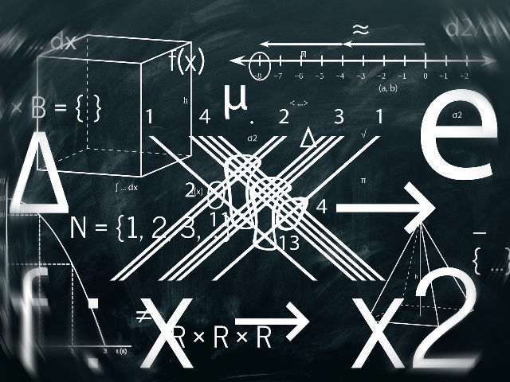
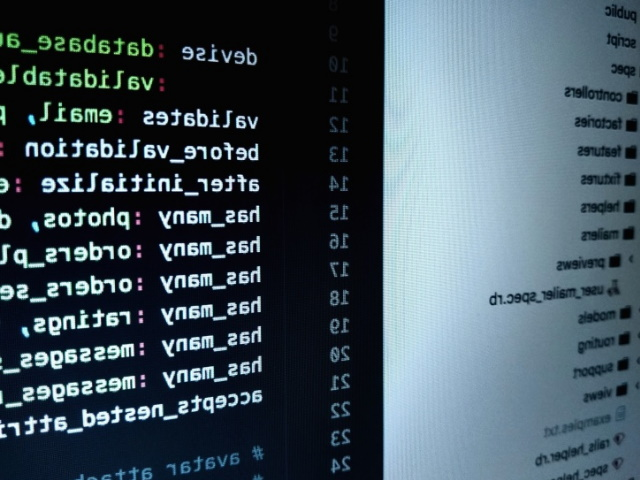

09.03.03
Прикладная информатика-
Прикладная информатика - это не только умение разбираться в каком-то ПО и то, как и где оно применяется. Прежде всего это ТО, КАК оно работает и как устроено. Понять это невозможно без базовых дисциплин. В первую очередь это дисциплины математического профиля без которых успешно и фундаментально овладеть информационными науками однозначно невозможно.
Уважаемые абитуриенты!
Обучение в школе и в институте это два разных полюса. И не только потому, что в России среднее образование обязательно, а высшее – нет. Однозначно, самое важным в будущей учёбе в институте - это ваша мотивация. Если вы реально хотите получить возможность в будущем заниматься интересной работой, бизнесом или исследованиями в области прикладной информатики и информационных технологий, то сотрудники кафедры приложат все усилия, чтобы помочь вам в этом.
Не хочется здесь обнадёживать вас и говорить, что всё будет очень легко и просто. По большому счёту хорошая учёба в вузе - это каждодневный и в целом непростой труд. Если вы действительно хотите разобраться в изучаемом предмете, то придётся заставлять себя научиться понимать и запоминать многие вещи, придётся посещать лекции и читать параллельно с ними много книг. Профессорско-преподавательский состав кафедры однозначно в этом поможет. В подавляющем большинстве это выпускники мах-мата и ВМК МГУ, и Физтеха. Они вам помогут приобрести знания различных алгоритмов обработки, передачи и хранения информации, систем управления, в том числе big data и разбираться в различных типах искусственного интеллекта. Научат применять их – эти алгоритмы, а также как модифицировать и создавать новые, как реализовать их в виде программных комплексов на объектно-ориентированных языках высокого уровня, как их тестировать и масштабировать.
Заведующий кафедрой 311
Вестяк Владимир Анатольевич
Учебный план
Учебные планы по направлению Прикладная информатика устроены таким образом, что бы на старших курсах вы могли бы выбрать более интересные для вас предметы. Так же вы сможете предлагать свои проекты и идеи для последующей реализации на летних практиках в том числе на предприятиях, в своих курсовых проектах и в научных исследованиях вместе в вашими руководителями. Уже к началу 4-го курса вы получите базовые знания в области искусственного интеллекта и базовыми знаниями в области технических систем и математического моделирования.
-
- Информатика
- Алгоритмические языки
- Языки программирования высокого уровня
- Архитектура ЭВМ
- Программная инженерия
- Операционные системы
- Информационные системы
- Базы данных
- Компьютерная графика
- 
-
- Математический анализ
- Линейная алгебра и аналитическая геометрия
- Дифференциальные уравнения
- Дискретная математика
- Физика
- Теория вероятности и математическая статистика
- 
-
- Сбор, хранение, защита и обработка информации
- Информационные потоки, ресурсы в органах государственного и муниципального управления
- Локальные, корпоративные и глобальные информационные сети
- Информационные системы в рекламной деятельности
- Высокоуровневая компьютерная графика, анимация, средства мультипликации
- Аудио и видеопродукция, звуковой дизайн
- Веб-дизайн и интернет-технологии
- Издательское и оформительское дело, средства массовой информации
-
- Вычислительная математика и механика
- Теоретическая механика и механика сплошных сред
- Теория колебаний в технических системах
- Теория оптимизации и численные методы
- Методы компьютерной математики
- Уравнения в частных производных
- Вычислительные сети и телекоммуникации
- Теория функций и вариационное исчисление
- Математическое и компьютерное моделирование в технических системах
- 
Перспетивы
По исследованиям сервиса Работа.ру самые высокооплачиваемые вакансии для студентов предлагают работодатели в IT именно в технических отраслях, а так же в сфере продаж. Выпускник с опытом работы около полугода легко находит работу по автоматизации малого и среднего бизнеса и им предлагают зарплату от 60 до 100 тысяч рублей. Именно поэтому, успешно проходящие обучение ребята старших курсов уже имеют работу и работают IT – сотрудниками в различных компаниях.
-

Яндекс
-
Google
-
Mail.ru Group
-

Microsoft
-
Bosch
-

Intel
Контакты
-
Почта: kaf311@yandex.ru
АДРЕС: Кафедра 311 МАИ, Россия, г. Москва, Волоколамское шоссе, д. 4к3
ТЕЛЕФОН: +7 499 158-46-47 -
-
Метро «Войковская», станция МЦК «Стрешнево»:
трамваями № 23, 27, 30 и 31 до остановки «Улица Константина Царёва» -
Метро «Щукинская»:
трамваями № 30 и 31 до остановки «Улица Константина Царёва»;
трамваями № 15 и 28 до остановки «Улица Панфилова» -
Метро «Сокол»:
троллейбусами № 70 и 82 до остановки «Авиационный институт»;
Как добраться?
-